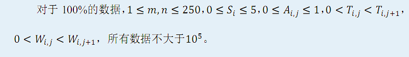

第一行包含两个正整数m和n，分别表示员工数量和产品的种类数；
第二行包含n 个正整数，第i个正整数为Ci；
以下m行每行n 个整数描述矩阵A；
下面m个部分，第i部分描述员工i的愤怒值与产品数量的函数关系。每一部分由三行组成：第一行为一个非负整数Si，第二行包含Si个正整数，其中第j个正整数为Ti,j，如果Si=0那么输入将不会留空行（即这一部分只由两行组成）。第三行包含Si+1个正整数，其中第j个正整数为Wi,j。
你的公司接到了一批订单。订单要求你的公司提供n类产品，产品被编号为1~n，其中第i类产品共需要Ci件。公司共有m名员工，员工被编号为1~m员工能够制造的产品种类有所区别。一件产品必须完整地由一名员工制造，不可以由某名员工制造一部分配件后，再转交给另外一名员工继续进行制造。
我们用一个由0和1组成的m*n的矩阵A来描述每名员工能够制造哪些产品。矩阵的行和列分别被编号为1~m和1~n，Ai,j为1表示员工i能够制造产品j，为0表示员工i不能制造产品j。
如果公司分配了过多工作给一名员工，这名员工会变得不高兴。我们用愤怒值来描述某名员工的心情状态。愤怒值越高，表示这名员工心情越不爽，愤怒值越低，表示这名员工心情越愉快。员工的愤怒值与他被安排制造的产品数量存在某函数关系，鉴于员工们的承受能力不同，不同员工之间的函数关系也是有所区别的。
对于员工i，他的愤怒值与产品数量之间的函数是一个Si+1段的分段函数。当他制造第1~Ti,1件产品时，每件产品会使他的愤怒值增加Wi,1，当他制造第Ti,1+1~Ti,2件产品时，每件产品会使他的愤怒值增加Wi,2……为描述方便，设Ti,0=0,Ti,si+1=+∞，那么当他制造第Ti,j-1+1~Ti,j件产品时，每件产品会使他的愤怒值增加Wi,j， 1≤j≤Si+1。
你的任务是制定出一个产品的分配方案，使得订单条件被满足，并且所有员工的愤怒值之和最小。由于我们并不想使用Special Judge，也为了使选手有更多的时间研究其他两道题目，你只需要输出最小的愤怒值之和就可以了。
第一行包含两个正整数m和n，分别表示员工数量和产品的种类数；
第二行包含n 个正整数，第i个正整数为Ci；
以下m行每行n 个整数描述矩阵A；
下面m个部分，第i部分描述员工i的愤怒值与产品数量的函数关系。每一部分由三行组成：第一行为一个非负整数Si，第二行包含Si个正整数，其中第j个正整数为Ti,j，如果Si=0那么输入将不会留空行（即这一部分只由两行组成）。第三行包含Si+1个正整数，其中第j个正整数为Wi,j。
仅输出一个整数，表示最小的愤怒值之和。
2 3
2 2 2
1 1 0
0 0 1
1
2
1 10
1
2
1 6
24
